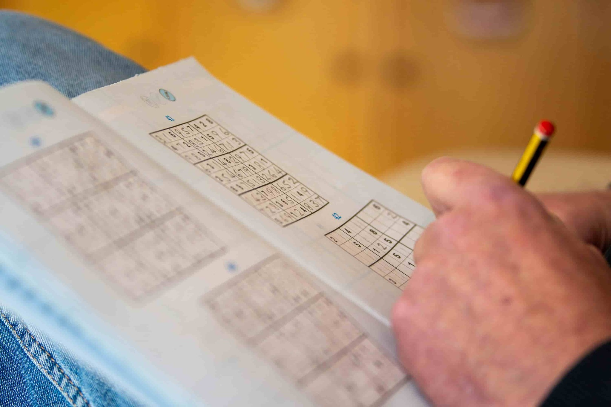
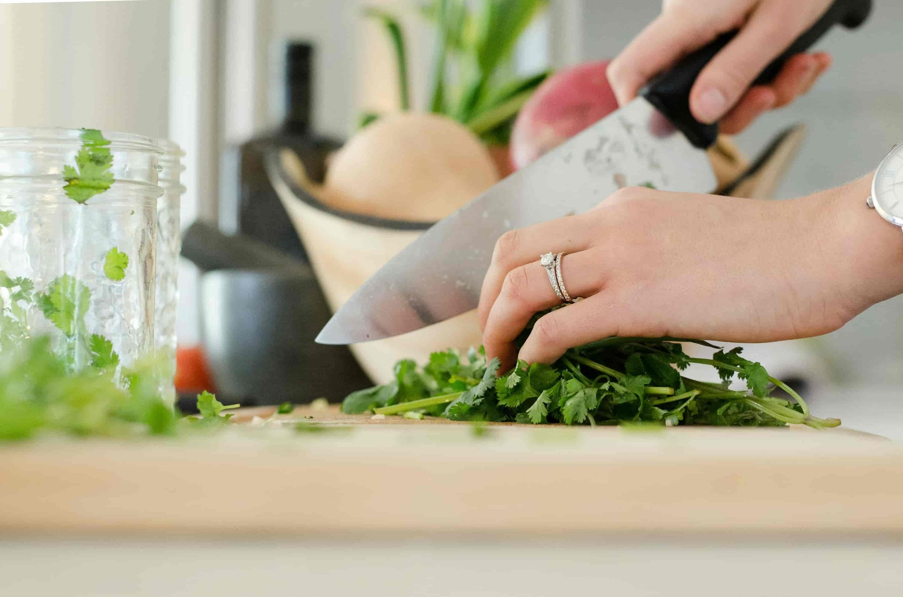
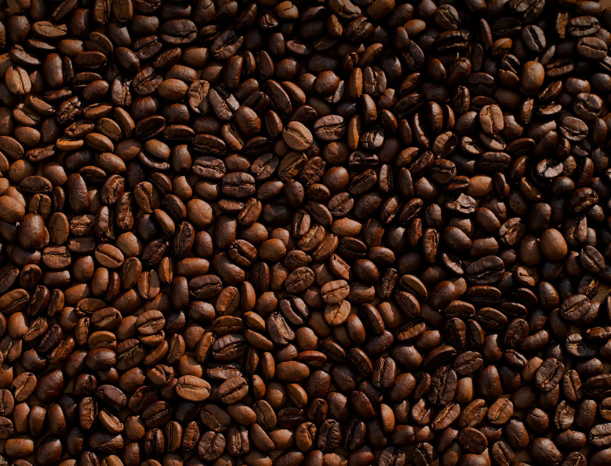

I enjoy playing golf in my free time – it's a great way to relax and clear my mind.
Cybersecurity is another passion of mine; I love learning about ways to protect digital spaces.

When I'm not coding, you can find me solving sudoku puzzles – it's a fun challenge!
As an experienced cook, I take great pride in preparing delicious meals and exploring new flavors.


And of course, I'm a coffee enthusiast! It fuels my energy and keeps me focused.